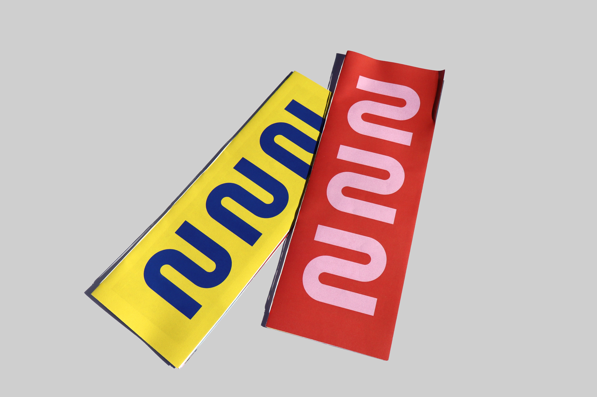
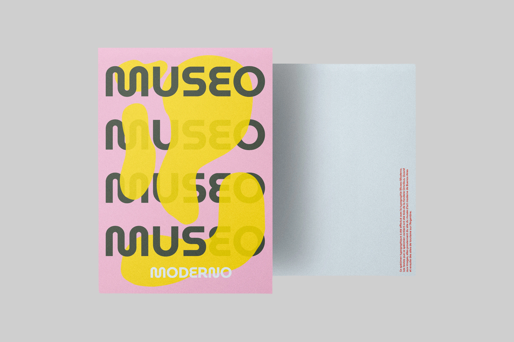
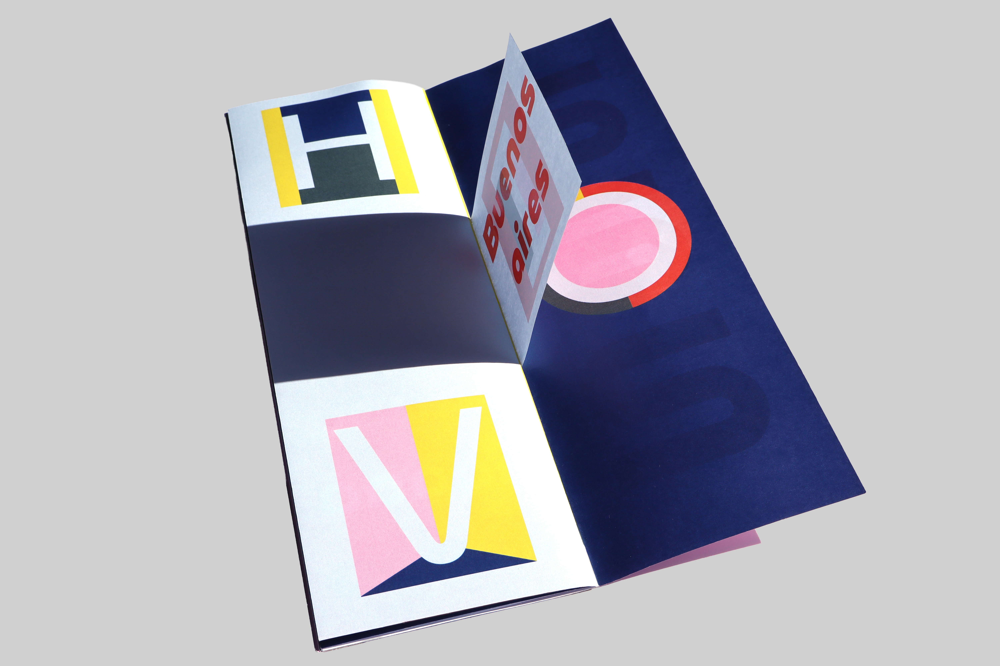
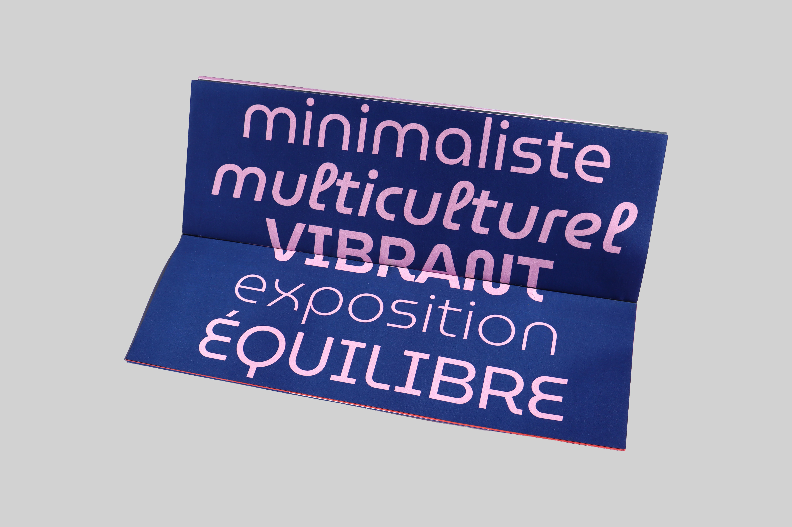

Museo Moderno
Spécimen typographique





Le spécimen s’articule autour de la typographie Museo Moderno, choisie pour son ancrage culturel lié à l’identité visuelle du musée d’art moderne de Buenos Aires. Cette connexion à l’Amérique latine oriente l’ensemble du projet, qui reprend les codes visuels de la ville et de son territoire. Deux éditions composent le spécimen l’une typographique, l’autre iconographique, afin d’explorer l’univers graphique, architectural et atmosphérique associé à cette fonte.